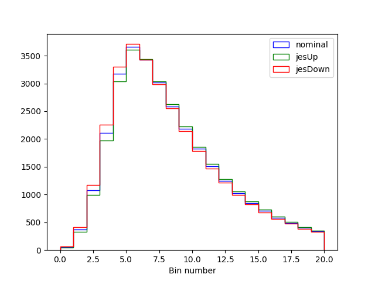
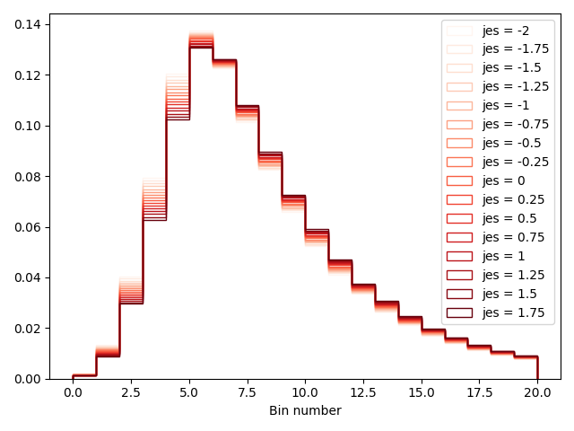
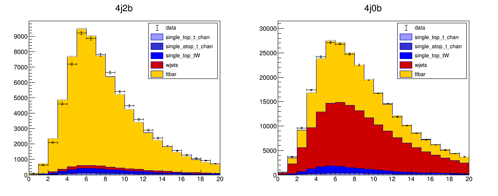

Exercise 3 - Control Regions and Systematic Uncertainties
Launch the cms_combine container by typing the following into a terminal on your laptop (or by clicking the play button next to the cms_combine container in the Docker desktop application and using the terminal there).
In today's exercise, we are going to use our 4j0b control region that we populated at the end of exercise 2 to constrain our wjets process in our 4j2b signal region. Don't worry if you didn't manage to process the samples to create the histograms for the 4j0b region. I have put a .csv file exercise2solutions/allregions_mbjj.csv that has both the signal region and control region histograms for you. You'll also find the datacard for the signal region in the same folder: signalregion_mbjj.txt.
Control region datacard
First, we need to create a new datacard for our 4j0b control region. This will look very similar to our signal region datacard except that we need to change the name of the channel and point to the right histograms in the file. Copy the text below into a new text file, i've called mine controlregion_mjjj.txt
imax 1
jmax 4
kmax 0
# -----------------------------------------------------------------------------------------
shapes data_obs controlregion allregions_mbjj.csv controlregion:data:nominal,sum_w:sum_ww
shapes * controlregion allregions_mbjj.csv controlregion:$PROCESS:nominal,sum_w:sum_ww
# -----------------------------------------------------------------------------------------
bin controlregion
observation -1
# -----------------------------------------------------------------------------------------
bin controlregion controlregion controlregion controlregion controlregion
process ttbar single_atop_t_chan single_top_t_chan single_top_tW wjets
process 0 1 2 3 4
rate -1 -1 -1 -1 -1
# -----------------------------------------------------------------------------------------
wjets_norm rateParam controlregion wjets 1 [0,5]
Notice how the shapes lines are now pointing to the controlregion histograms in the allregions_mbjj.csv file. The names of the channel everywhere has also changed to controlregion. This tells combine that this data are independent from the data in our signal region. Finally, the last line of the datacard,
wjets_norm that modifies the rate of the wjets process in the controlregion. By naming this parameter the same as the one in our signal region datacard, this parameter will simultaneously scale the wjets process in both regions!
Now we need to create a single datacard that contains the information for both the signal region and the control region. We do not need to do this by hand since the package comes with a tool that does this for us. To create combined datacard, we can run the following,
combineCards.py signalregion=signalregion_mbjj.txt controlregion=controlregion_mjjj.txt > combined.txt
Let's look at the resulting datacard (below)
Combination of signalregion=signalregion_mbjj.txt controlregion=controlregion_mjjj.txt
imax 2 number of bins
jmax 4 number of processes minus 1
kmax 0 number of nuisance parameters
----------------------------------------------------------------------------------------------------------------------------------
shapes * controlregion allregions_mbjj.csv controlregion:$PROCESS:nominal,sum_w:sum_ww
shapes data_obs controlregion allregions_mbjj.csv controlregion:data:nominal,sum_w:sum_ww
shapes * signalregion allregions_mbjj.csv signalregion:$PROCESS:nominal,sum_w:sum_ww
shapes data_obs signalregion allregions_mbjj.csv signalregion:data:nominal,sum_w:sum_ww
----------------------------------------------------------------------------------------------------------------------------------
bin signalregion controlregion
observation -1 -1
----------------------------------------------------------------------------------------------------------------------------------
bin signalregion signalregion signalregion signalregion signalregion controlregion controlregion controlregion controlregion controlregion
process ttbar single_atop_t_chan single_top_t_chan single_top_tW wjets ttbar single_atop_t_chan single_top_t_chan single_top_tW wjets
process 0 1 2 3 4 0 1 2 3 4
rate -1 -1 -1 -1 -1 -1 -1 -1 -1 -1
----------------------------------------------------------------------------------------------------------------------------------
wjets_norm rateParam signalregion wjets 1 [0,5]
wjets_norm rateParam controlregion wjets 1 [0,5]
We now see that all of the information has been combined into a single datacard! at the top of the datacard, we see that the datacard is a result of the combination of our two original datacards, and the numbers imax, jmax and kmax have automatically been updated for us.
Warning
In the combined datacard, both the signal region and control region histograms are taken from the same file allregions_mbjj.csv, this is because I have changed the shape lines in my signal region datacard to read
shapes data_obs signalregion allregions_mbjj.csv signalregion:data:nominal,sum_w:sum_ww
shapes * signalregion allregions_mbjj.csv signalregion:$PROCESS:nominal,sum_w:sum_ww
.csv files.
This datacard can now be used as the input to out combine commands to perform fits and calculate uncertainties as we did when we only had a single datacard.
Question
Run the fit diagnostics method on the combined datacard to calculate the best fit value for the signal strength parameter r. How does this compare to the two results we obtained with a single datacard? Make a plot of the post-fit distributions and the data in the two regions from this new fit. Remember to add the option -n name to create a different name for the output file to avoid writing over your original outputs from combine.
Show answer
We can run the same commands as before, but this time we provide the combined datacard as the input. For the best fit,
with the result as, The result and uncertainty is much closer to the version of the datacard without the freely floatingwjets_norm parameter. This means we've successfully managed to recover the constraint on the wjets_norm parameter by using the data in the 4j0b control region!
You can use the same code from Exercise 2 to plot each of the regions from the result file fitDiagnosticsCombined.root
Systematic Uncertainties
In our fits so far, we have assumed that the distributions and rates determined from the simulated events represent perfectly what we would expect to see in data. Of course, reality is never quite that easy and every step of any real data analysis will involve some assumption about how well we can model a particular effect. Each of these assumptions comes with some uncertainty and these uncertainties impact the predicted yields and distributions - we call them "systematic uncertainties". These could range from uncertainties in the theoretical cross-sections used to normalise the samples, uncertainties in the efficiency of the trigger or event selection, energy scale and other calibrations used to reconstruct the particles or even the uncertainty on the integrated luminosity of our data set!
The vast majority of the time spent doing a real LHC data analysis is carefully understanding which uncertainties effect any particular measurement and how large they are. Often, a lot of work is put into reducing these uncertainties (or rather their effect on the measurement) as much as possible to get the best measurements from the data. We don't have time in these exercises to properly calculate the effects of all the different systematic uncertainties that we should consider, but we will take a look at a few simple ones and include them in our analysis.
In likelihood based methods (mostly what we use at the LHC), systematic uncertainties are included via nuisance parameters and auxiliary observables that can have different distributions.
Rate uncertainties
The simplest form of systematic uncertainties are those that affect the overall predicted rate of a given process. We typically model rate uncertainties using the log-normal distribution. In combine this is implemented by multiplying the rate of a given process by a multiplicative factor,
where \nu is the associated nuisance parameter and \kappa is the size of the effect of the uncertainty on a particular process. In combine an additional gaussian probability term in the likelihood gets included. This means that since the likelihood estimator \hat{\nu} is normal distributed, f(\hat{\nu}) will be log-normal distributed (hence the name). As we saw in lectures, the practical reason why we use log-normals is that f can never be negative, which makes sense for a rate.
Add the following lines to your signal region datacard,
lumi lnN 1.023 1.023 1.023 1.023 -
ideff lnN 1.01 1.01 1.01 1.01 -
btag lnN 1.03 1.03 1.03 1.03 1.03
Each of these lines tells combine that we have a new rate systematic uncertainty. Lets take a look at the first one of these lumi. The first parts of the line give the nuisance parameter parameter its name - lumi and its type lnN means its log-normal. The numbers represent the value of \kappa for each process in our signal region. An uncertainty in the integrated luminosity measurement will scale all of the simulated processes up/down by the same amount - in our 2015 data, the uncertainty in the luminosity measurements was 2.3% so \kappa is 1.023.
If the parameter lumi is set to +1, the value of f will be 1.023 so all of the processes will increase by a factor 1.023. Similarly, if the parameter lumi is set to -1, the value of f will be 1.023 so all of the processes will change by 1/1.023 (decrease).
Our wjets normalisation is determined by the fit - i.e from the data in the control region - so the luminosity systematic uncertainty should have no effect. In combine this is indicated by putting a "-" instead of a value. The next line ideff is exactly the same, except it is the systematic uncertainty for the muon/electron identification efficiency measurements and is 1%.
The third line is for the b-tagging efficiency, and the uncertainty has an effect of 3% in the signal region. In the control region however, since we are rejecting b-jets, the effect of the uncertainty should be opposite (anti-correlated) to the signal region. In combine we achieve this by setting \kappa < 1.
Question
If the b-jet tagging efficiency increases the rate in the signal by 3%, what should the values of kappa be in the control region? Remember the effect should be opposite to the signal region and that since there is about 3 times as many events in the signal region as the control region, increasing the number of events that pass the b-tag (in our 4j2b region) by 3% will not result in a reduction of 3% events that fail the b-tag (in the 4j0b region). Add the systematic uncertainty lines for the lumi, ideff and btag to your control region datacard.
Show answer
The number should be \kappa=0.99 in the control region. This is because adding 3% of the yield in the signal region to the control region would increase the control region yield by 1% since there's already 3 times as much data there. The rate uncertainty lines in the datacard for the control region should look like,
Notice that for the btag uncertainty, there should be an entry for the wjets. This is because this uncertainty has a different effect in the signal and control regions.
Shape uncertainties
Some uncertainties in will affect both the overall rate of a particular process and its shape. For these uncertainties, we need to provide alternative histograms that represent the shape of a process when we vary some aspect of our model up and down. Remember, when we created our .csv files, we created histograms where we shifted the jet energy scale up and down by its uncertainty, resulting from uncertainties in the jet calibrations. Let's take a look at these distributions for the ttbar process. You can use the following code in a notebook to plot these distributions,
import matplotlib.pyplot as plt
import pandas as pd
df = pd.read_csv("allregions_mbjj.csv")
df = df[ (df.channel=='controlregion') & (df.process=='ttbar') ]
bins = df[df.systematic=='nominal']['bin']
print(len(bins))
plt.hist(bins,bins=bins
,weights=df[df.systematic=='nominal']['sum_w']
,histtype='step'
,color='blue'
,label='nominal')
plt.hist(bins,bins=bins
,weights=df[df.systematic=='jesUp']['sum_w']
,histtype='step'
,color='green'
,label='jesUp')
plt.hist(bins,bins=bins
,weights=df[df.systematic=='jesDown']['sum_w']
,histtype='step'
,color='red'
,label='jesDown')
plt.legend()
plt.xlabel("Bin number")
Which will produce a figure similar to the one below,

We can see that when the jet energy scale is increased, the observable distribution shifts to the right, while when it is decreased, the observable distribution shifts to the left! This uncertainty will change our prediction of what the ttbar shape looks like (and in fact the other processes too).
We need to tell combine about these histograms to create shape systematic uncertainties. First, we need to extend the shapes lines in the datacards to point to these histograms. We do this by modifying the shapes line of our signalregion_mbjj.txt datacard to read
shapes * signalregion allregions_mbjj.csv signalregion:$PROCESS:nominal,sum_w:sum_ww signalregion:$PROCESS:$SYSTEMATIC,sum_w:sum_ww
$SYSTEMATIC. This tells combine that each shape systematic uncertainty templates can be found in the same .csv file but will correspond to the column systematic==SYSTEMATICUp and systematic==SYSTEMATICDown. The value of SYSTEMATIC is determined from each of the shape uncertainty lines we add at the end of the datacard. We have only one which we called jes so we just need to add the following line to our signal region datacard,
This line tells combine to create a nuisance parameter for our shape uncertainty with the name jes. Each number indicates how big the variation that templates corresponds to is, for each process. The value 1 means that each alternate histogram corresponds to a 1-sigma variation. If we put a - it would mean there is no effect for this process.
We also need to add the same to our control region datacard since the same source of uncertainty (and hence the same parameter) will simultaneously modify the shapes of our processes in the 4j0b and 4j2b regions.
Question
Extend the shapes lines in the control region datacard and add the systematic uncertainty line in the control region datacard too.
Show answer
First, we need to modify the shapes lines in the control region datcard as follows,
shapes * controlregion allregions_mbjj.csv controlregion:$PROCESS:nominal,sum_w:sum_ww controlregion:$PROCESS:$SYSTEMATIC,sum_w:sum_ww
combine to create a shape uncertainty for the jes parameter at the end of the datacard,
combine will create a new parameter, called jes and interpolate each bin of the histogram so that the histogram shape becomes a function of jes. The interpolating function is designed to be differentiable and so that we retrieve the nominal shape when jes=0, the jesUp shape when jes=1 and the jesDown shape when jes=-1.
First, let's build the statistical model for the signal region datacard,
Using the code below, we can plot the distribution of the ttbar process as we vary the jes parameter value,
from root2py import *
import ROOT
import numpy as np
file = ROOT.TFile.Open("signalregion_mbjj.root ")
workspace = file.Get("w")
hists = []
jes_vals = np.arange(-2,2,0.25)
for jes_val in jes_vals:
workspace.var("jes").setVal(jes_val)
hist = workspace.pdf("shapeSig_signalregion_ttbar_morph").createHistogram("CMS_th1x")
hist.SetName("hist_%g"%jes_val)
hists.append(hist)
import matplotlib.pyplot as plt
import matplotlib.colors as mcolors
import matplotlib.cm as cm
normalize = mcolors.Normalize(vmin=jes_vals.min(), vmax=jes_vals.max())
colormap = cm.Reds
for i,jes_val in enumerate(jes_vals):
h = hists[i]
rx,ry,ey = readHist(h)
plt.hist(rx[0:-1],bins=rx,weights=ry
,histtype='step',label='jes = %g'%jes_val
,color=colormap(normalize(jes_val)))
plt.xlabel("Bin number")
plt.legend()
plt.tight_layout()
import ROOT
import numpy as np
file = ROOT.TFile.Open("signalregion_mbjj.root ")
workspace = file.Get("w")
hists = []
jes_vals = np.arange(-2,2,0.25)
for jes_val in jes_vals:
workspace.var("jes").setVal(jes_val)
hist = workspace.pdf("shapeSig_signalregion_ttbar_morph").createHistogram("CMS_th1x")
hist.SetName("hist_%g"%jes_val)
hists.append(hist)
ROOT.gStyle.SetOptStat(0)
c = ROOT.TCanvas()
leg = ROOT.TLegend(0.6,0.3,0.89,0.89)
leg.SetBorderSize(0)
for i,jes_val in enumerate(jes_vals):
hists[i].SetTitle("")
hists[i].GetXaxis().SetTitle("Bin Number")
hists[i].GetYaxis().SetTitle("")
hists[i].SetLineWidth(2)
if i==0: hists[i].Draw("PLC")
else: hists[i].Draw("histsame PLC")
leg.AddEntry(hists[i],"jes = %g"%jes_val,"L")
color+=1
leg.Draw()
c.Draw()
This will give a figure similar to the following,

Monte-carlo (MC) statistics uncertainties.
Finally, we also need to account for the fact that our simulated samples (Monte-carlo or MC) have a limited number of events available to create the histograms. This leads to a statistical uncertainty on the histograms that are used in the fits. combine can take care of these for us by using the sum_ww column that we included in our dataframes. We just need to add the following line to the datacard,
0 at the end is used to determine how the calculation is done (this is very technical ut if you want to find out about this you can read about it here).
Question
Add the relevant line to the control region datacard to account for the MC statistical uncertainties.
Show answer
We just need to add the following line to the controlregion_mjjj.txt datacard,
Finally, we should make sure the kmax line in our datacards is adjusted to reflect the total number of systematic uncertainties. We do not count the autoMCStats line so we shoud set kmax to 4 in each datacard.
Putting it all together
Now we have everything in place for the control region and systematic uncertainties, we should re-run the fit and extract the uncertainty on our measured signal rate r.
Question
-
Run the
FitDiagnosticsmethod on the combination of the signal and control region and create a plot of the best fit for both regions. -
Determine the best fit parameter values.
-
Calculate the \chi^{2} from the best fit model.
-
Perform a profiled likelihood scan of the signal strength
rand plot it.
For 2. you can use the code below to print out the fit results.
Warning
You may find that you get some errors in these steps related to the fit result. I advise you to add the --cminDefaultMinimizerStrategy 0 to your combine commands.
Solution
-
First we should create a new combined card with,
Next, we run the fit, Using the output file we can find the results of the fit and also make plots of the. It should look something like the figure below,  -
Using the code provided, we get the following output (you should see something similar),
Text OnlyFloating Parameter FinalValue +/- Error -------------------- -------------------------- btag 2.1634e+00 +/- 8.54e-01 ideff 4.6681e-01 +/- 1.02e+00 jes 7.7198e-01 +/- 6.09e-02 lumi -3.7650e-01 +/- 1.01e-02 prop_bincontrolregion_bin0 7.9891e-01 +/- 8.83e-01 prop_bincontrolregion_bin1 2.1593e+00 +/- 9.00e-01 prop_bincontrolregion_bin10 -1.3274e-01 +/- 9.10e-01 prop_bincontrolregion_bin11 5.6041e-01 +/- 9.08e-01 prop_bincontrolregion_bin12 -1.1857e+00 +/- 9.12e-01 prop_bincontrolregion_bin13 -4.7468e-01 +/- 9.10e-01 prop_bincontrolregion_bin14 -2.6136e-01 +/- 9.08e-01 prop_bincontrolregion_bin15 -7.2318e-01 +/- 9.09e-01 prop_bincontrolregion_bin16 -4.2696e-02 +/- 9.06e-01 prop_bincontrolregion_bin17 -1.1439e+00 +/- 9.09e-01 prop_bincontrolregion_bin18 -4.3565e-01 +/- 9.08e-01 prop_bincontrolregion_bin19 -9.3066e-02 +/- 9.03e-01 prop_bincontrolregion_bin2 2.2050e+00 +/- 9.14e-01 prop_bincontrolregion_bin3 2.1998e+00 +/- 9.19e-01 prop_bincontrolregion_bin4 1.1193e+00 +/- 9.31e-01 prop_bincontrolregion_bin5 -1.2407e+00 +/- 9.34e-01 prop_bincontrolregion_bin6 -8.1615e-01 +/- 9.26e-01 prop_bincontrolregion_bin7 -7.9343e-01 +/- 9.15e-01 prop_bincontrolregion_bin8 1.1287e-01 +/- 9.13e-01 prop_bincontrolregion_bin9 -1.7256e-01 +/- 9.11e-01 prop_binsignalregion_bin0 -4.3051e-01 +/- 9.76e-01 prop_binsignalregion_bin1 -8.8268e-01 +/- 9.84e-01 prop_binsignalregion_bin10 6.6384e-01 +/- 9.85e-01 prop_binsignalregion_bin11 5.6890e-01 +/- 9.84e-01 prop_binsignalregion_bin12 5.6803e-01 +/- 9.83e-01 prop_binsignalregion_bin13 5.8144e-01 +/- 9.82e-01 prop_binsignalregion_bin14 2.1825e-01 +/- 9.82e-01 prop_binsignalregion_bin15 5.5108e-01 +/- 9.82e-01 prop_binsignalregion_bin16 4.5671e-01 +/- 9.81e-01 prop_binsignalregion_bin17 5.1578e-01 +/- 9.79e-01 prop_binsignalregion_bin18 6.7096e-01 +/- 9.79e-01 prop_binsignalregion_bin19 2.1684e-01 +/- 9.81e-01 prop_binsignalregion_bin2 -1.0313e+00 +/- 9.86e-01 prop_binsignalregion_bin3 -6.6500e-01 +/- 9.87e-01 prop_binsignalregion_bin4 -9.7874e-01 +/- 9.89e-01 prop_binsignalregion_bin5 -5.2094e-01 +/- 9.88e-01 prop_binsignalregion_bin6 -2.9065e-01 +/- 9.88e-01 prop_binsignalregion_bin7 1.5923e-01 +/- 9.87e-01 prop_binsignalregion_bin8 5.5739e-01 +/- 9.87e-01 prop_binsignalregion_bin9 4.2686e-01 +/- 9.86e-01 r 8.7335e-01 +/- 2.67e-02 wjets_norm 5.0207e-01 +/- 1.47e-02 -
The \chi^{2} is obtained first running the
which gives a value of 335.387. We can convert it to a p-value again.GoodnessOfFitmethod, -
We can run a scan of the profiled likelihood using
combinewith,Bashand plot using similar code to before. The output should look like the following,combine combined.txt -M MultiDimFit --algo grid --points 50 --setParameterRanges r=0.7,1 -n Combined
All of the code to produce these results can be found under exercise3solutions/AnswersExercise3.ipynb
Challenge
- Calculate the uncertainty on
ronly considering statistical uncertainties and when also including systematic ones. This will involve freezing some of the parameters of the model to their maximum likelihood estimates - you can refer to information here on how this can be done. - From the fit result contained in the file, you can obtain a covariance matrix at the maximum of the likelihood using some code below,
Text OnlyWhich parameters are most strongly correlated with the signal strenght
import ROOT fi = ROOT.TFile.Open("fitDiagnosticsTest.root") obj = fi.Get("fit_s") obj.correlationMatrix().Print()r?